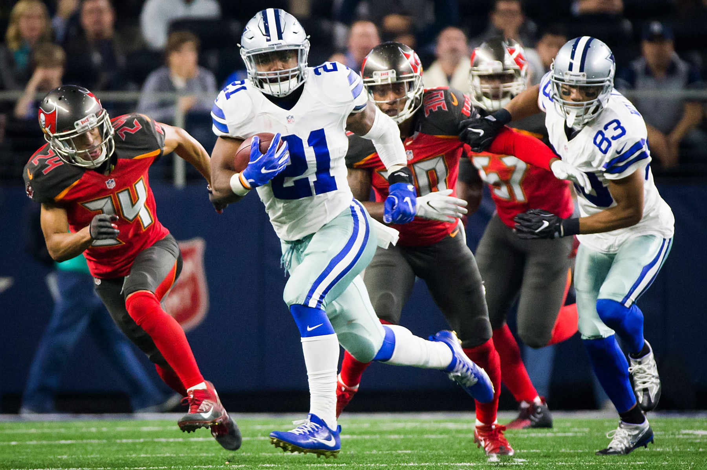

Cowboys Gameday: Week 16
Lions at Cowboys
7:30 p.m. Monday TV: ESPN
Radio: KRLD-FM (105.3), KMVK-FM (107.5, Spanish)
Line: Cowboys by 7½
A win would mean ...
Absolutely nothing. And the Cowboys can relish that. Dallas has already clinched the NFC’s No. 1 seed, so it can start thinking about the playoffs with two regular-season games remaining. Dallas can win its 13th game, which matches the franchise record for most regular-season wins.
A loss would mean ...
The Lions improve their postseason standing. They enter the game with the NFC North title and a playoff berth in the mix.
Advertisement
SportsDay’s Picks
Cowboys running back Ezekiel Elliott needs 258 yards to break Eric Dickerson’s NFL rookie rushing record of 1,808 yards. (Smiley N. Pool/Staff Photographer)

Brandon George: The Cowboys clinched the NFC East title and No. 1 seed throughout the playoffs with the Giants’ loss Thursday at Philadelphia. So the Cowboys will put it on cruise control on Monday Night Football, right? Not yet. Cowboys coach Jason Garrett wants his team to maintain its edge down the stretch and heading into the playoffs. Garrett won’t pull back in the team’s regular-season home finale. The Cowboys won’t have any pressure to win. But a loose Cowboys team will jump out to a first-half lead and hold off the Lions late as Detroit comes up just short this time trying to rally from behind in the fourth quarter. Cowboys, 31-27

Kate Hairopoulos: Dallas running back Ezekiel Elliott needs 258 yards to set an NFL rookie rushing record. He’ll get 100 or so against Detroit on Boxing Day, setting up a quandary for the Cowboys’ coaching staff next week. He won’t say so, but he wants to take down Eric Dickerson’s record even if the game at Philadelphia is meaningless. For now, he settles for lifting Dallas to 13 wins. Lions QB and Highland Park hero Matthew Stafford doesn’t have enough help to keep up with a resurgent Cowboys offense. Cowboys, 28-17

Jon Machota: It’s certainly not the same Detroit team that played at AT&T Stadium in the 2014 playoffs. Calvin Johnson and Ndamukong Suh have been replaced by Marvin Jones and Haloti Ngata. Somehow, Matthew Stafford has found a way to lead the Lions to an NFL-record eight fourth-quarter comebacks. Even though it will be a one-possession game going into the fourth quarter Monday night, a much-improved Cowboys defense will come up with the key stops late. Ezekiel Elliott will rush for 120 yards, leaving him 138 away from Eric Dickerson’s rookie rushing record with one game remaining. Cowboys, 24-20

David Moore: If you argue the merits of which team has more at stake in this game, you’re missing the point. This young, bold Cowboys team doesn’t seem to take such things into consideration. Rookies Dak Prescott and Ezekiel Elliott are focused on being among the NFL’s elite every time they take the field. They want to introduce themselves to the league and serve opponents a warning that they will be around for a long time. This attitude is contagious. A Cowboys team that was criticized in the past for playing down to it’s competition hasn’t fallen short this season. It has been in every game, losing only two all season. Detroit won’t make it three. Cowboys, 34-20

Tim Cowlishaw: Dan Bailey puts on a field goal display while Dak Prescott shows us that a QB with 10 good fingers is superior to one with nine. Cowboys, 25-16

Rick Gosselin: Two MVP candidates square off — Ezekiel Elliott and Highland Park's Matthew Stafford. The Cowboys’ home field and Detroit's inability to run the ball will be the difference. Cowboys, 27-23

Barry Horn: Team with more at stake beats NFC champs. Second straight week a Highland Park QB wins at JerryWorld. Lions say later they’re hoping John Stephen Jones succeeds Matt Stanford. Lions, 24-21

Kevin Sherrington: Afterward, in an effort to “create the debate,” Jerry benches Dak, fires Garrett and nominates Stephen for a post in Trump’s cabinet. Cowboys, 27-21
You make the call
We want to know who you who think will win this week’s Cowboys game. Enter your score below, and see which team other readers think will take home the “W.” Scores plotted on the lower-right of the chart indicate a predicted Cowboys victory, upper-left indicate a predicted opponent victory. (Note: Only scores below 60 will be shown.)
Who do you think will win? Enter the scores for each team, then click the "submit" button.
Thank you for your submission
You picked the to win, . Share your prediction on social media:
of readers are picking the to win this week by an average of points.
Cowboys:
:
Times predicted:
Advertisement
Bob Sturm’s scouting report
SituationEdgeIn the know
When the Cowboys run the ball
Edge
Last week, the Cowboys returned to ground-game dominance by grinding down Tampa Bay with 32 carries at 5.8 yards per carry. They have two types of performances on the ground, solid and dominant, as shown by having zero days under 100 yards in 2016. Detroit is no push-over on the ground, though, having conceded just one 100-yard day since Nov. 1 in six games.
When the Cowboys pass the ball
Edge
The Lions have gotten strong play from Mississippi State’s Darius Slay again this season, but he is expected to miss this game with a hamstring injury. If that is the case, a close matchup might swing in the Cowboys’ favor. Detroit struggles in getting to the quarterback (29th) and getting off the field on third down (28th), two categories where the Cowboys excel (ranking 13th and 12th).
When the Lions run the ball
Edge
Dallas has seemingly gone weeks at a time without playing teams that have any desire to run the football. This week is no different as Detroit has a long history — since the retirement of Barry Sanders — of not having a ground game. They have been lost since Ameer Abdullah was lost for the year in September. Dallas, meanwhile, has surrendered just 3.1 yards per carry over 91 attempts over the last four games.
When the Lions pass the ball
EdgeHere is where Matthew Stafford demonstrates his value to Detroit with a group of targets downfield, including Golden Tate, new free agent-signing Marvin Jones, veteran Anquan Boldin and big TE Eric Ebron. The pass protection is improved with big first-rounder Taylor Decker at left tackle really providing some excellent play over the year. The interior is where they struggle, so look for the Cowboys to attack that space.
Special teams
EdgeThe Cowboys have not had what you would call an excellent season from their special teams, but Detroit has come on strong. In all of the major categories, the Lions are, at worst, at league average. Their punt return team is fifth, with former Redskins WR Andre Roberts providing some real punch, and Matt Prater has been a rock solid kicker. Dan Bailey hasn’t been poor this year, but his field goal percentage is the lowest of his career.
Intangibles
EdgeThe Lions’ season comes down to their showdown with Green Bay next weekend. Their incentive to win this game is measured in their wild-card possibilities, but they plan on winning the NFC North for the first time since 1993. The Cowboys have everything wrapped up, but they seem intent on completing each step with attention to detail.
Bob Sturm’s spotlight
Golden Tate is the best of the offensive threats that Matthew Stafford has to choose from in this first year after the retirement of Calvin Johnson. While the franchise has made its share of personnel missteps over recent years, the signing of Tate from Seattle before the 2014 season has been a tremendous value.
The Lions got Tate for five years at $31 million ($6.2 million average) with $16 million guaranteed, and he has given them massive production. He has ranked seventh in catches and 11th in yards among NFL receivers since coming to Detroit. Even more impressive, he has the most yards after catch of anyone in the league.
Tate is competitive, talkative and certainly not a favorite among Cowboys fans who still remember his open-field, blind-side blasting of Sean Lee in September 2012. With his size and attitude, many compare Tate to Steve Smith.
Tate works the middle of the field, can take the top off the defense and get behind guys, and he has hands that help him in traffic. Keeping Tate corralled is one of the keys to slowing down the Detroit offense, as he leads the NFL in yardage this month with 325 yards in three games.
Sturm’s prediction: The Cowboys are confident and are starting to see their defense pick up speed and complement a balanced and solid offense. Cowboys, 27-17
Jose Juarez/The Associated Press
Advertisement
Top photo: Tom Fox
Read more from The Dallas Morning News
Chasing 1,808
Track Ezekiel Elliott’s progress throughout the season as he makes a run at Eric Dickerson’s NFL rookie rushing record.

Trappings of legend
While Jerry Jones doesn’t live in the past, an exclusive look inside the Cowboys owner’s office is a journey through the franchise’s history.

Ringing endorsement
For 12 seasons with the Dallas Cowboys, Darren Woodson would routinely wreak havoc on Sundays, then onnect with his best friend on Tuesdays.